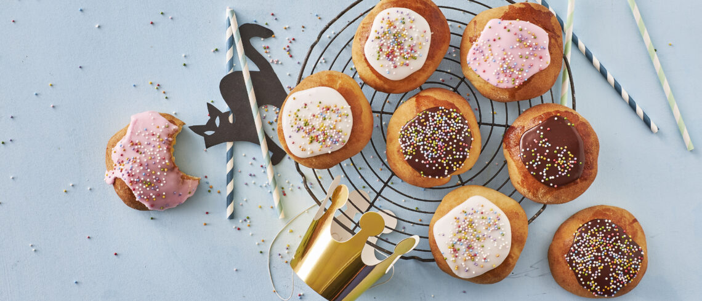
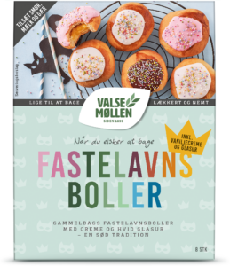

Min helt egen opskrift til de bedste fastelavnsboller
Bag nemme, gammeldags fastelavnsboller med Valsemøllen Fastelavnsboller
bageblanding. Med bageblandingen kan du hurtigt og nemt bage de lækreste
fastelavnsboller, som fyldes med creme og toppes med glasur. På under 2
timer kan du bage 8 styks af de gode, gammeldags fastelavnsboller.

For dobbelt portion
Du skal bruge
Boller
1 ps. Valsemøllen Melblanding
1 dl mælk
75 gram smør
20 gram gær
Creme
1 ps. Valsemøllen Cremeblanding (følger med i pakken)
1,5 dl koldt vand/li>
Glasur
1 ps. Valsemøllen Glasurblanding (følger med i pakken)
1-2 spsk. varmt vand
I denne opskrift har jeg brugt

køb den her
Sådan gør du
Gør cremen klar. Hæld vand i en skål, og tilsæt cremeblandingen. Pisk sammen, til cremen er ensartet.
Hæld tempereret mælk i en skål, tilsæt smuldret gær og rør ud. Tilsæt det bløde smør og melblandingen og rør sammen med en ske i ca. 1 minut.
Ælt dejen kort sammen på bordet til den bliver blank. Rul den ud til en pølse, og del i 8 lige store dele. Tryk hvert dejstykke ud i en flad cirkel med en diameter på ca. 8-10 cm.
Placer creme på størrelse med en 5-krone midt på hver dejcirkel med en ske. Luk forsigtigt dejen rundt om cremen.
Sæt bollerne med samlingen nedad på en bageplade beklædt med bagepapir.
Lad bollerne hæve tildækket i 45 minutter et lunt sted.
Pensl bollerne med et sammenpisket æg eller mælk, og bag i midten af ovnen ved 220°C (varmluft 200°C) i 10-12 minutter, til de er gyldne. Lad fastelavnsbollerne køle af.
Hæld glasurblandingen i en skål, tilsæt vand, og rør godt sammen med en ske. Smør på de afkølede fastelavnsboller.
Et godt tip: Prøv at variere fyldet med lidt ekstra lækkert. Tilføj f.eks. en smule instant kaffepulver, en lille chokoladebar, et stykke chokoladekiks, bær, æbletern eller karamel.